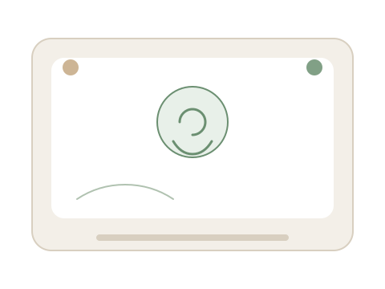

Colloquio individuale
50–55 minuti
Una cornice chiara che tutela lo spazio emotivo e distingue la seduta da una chiacchierata informale.
Sostegno psicologico online
Mi chiamo Saba Fiorentini e sono una psicologa, iscritta all’Ordine degli Psicologi della Lombardia con il n. 32345.
Se stai cercando una psicologa a Cremona o un percorso di psicologia online, possiamo valutare insieme un primo colloquio.
Formazione clinica e interesse per la narrazione autobiografica, con uno sguardo attento a come le persone sentono, si relazionano e si raccontano.
Percorsi di sostegno psicologico costruiti insieme, con l’obiettivo di acquisire maggiore consapevolezza di sé e valorizzare le risorse personali.
Il tempo dell’incontro definisce il setting clinico: individuale 50–55 minuti, di coppia 60–75 minuti.
Colloquio individuale
Una cornice chiara che tutela lo spazio emotivo e distingue la seduta da una chiacchierata informale.
Colloquio di coppia
Uno spazio protetto e regolato per entrambi i partner, orientato a comprensione reciproca e gestione della crisi.
Vuoi saperne di più su durata, setting e differenze con una chiacchierata? Leggi le FAQ.
Attualmente svolgo la mia attività online: una modalità utile per mantenere continuità e flessibilità, ovunque tu sia.

Riflessioni su autostima, relazioni e benessere psicologico, con riferimenti alla ricerca scientifica.
Caricamento articoli…
Puoi contattarmi via email oppure usare questa form: il messaggio verrà inviato direttamente a sabafiorentini.psi@gmail.com.
Contatti rapidi
OPL Lombardia n. 32345 · P.IVA 01860740198